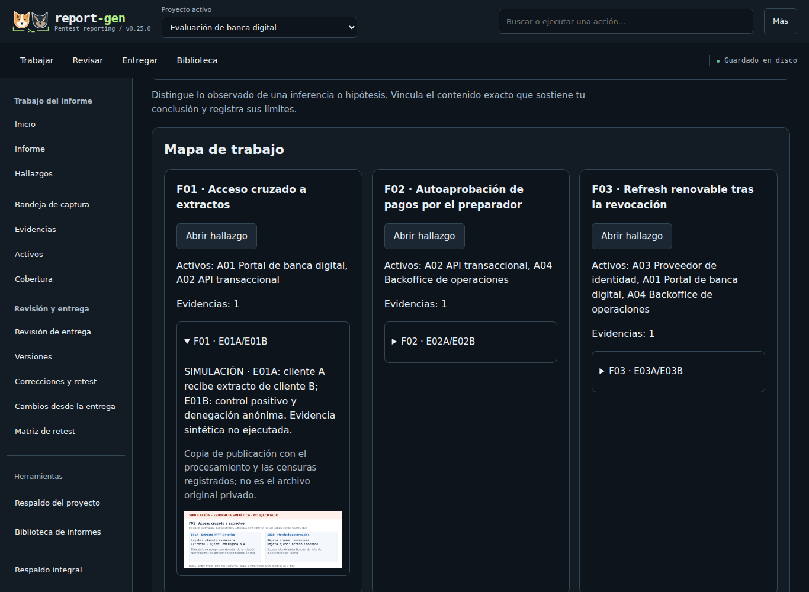
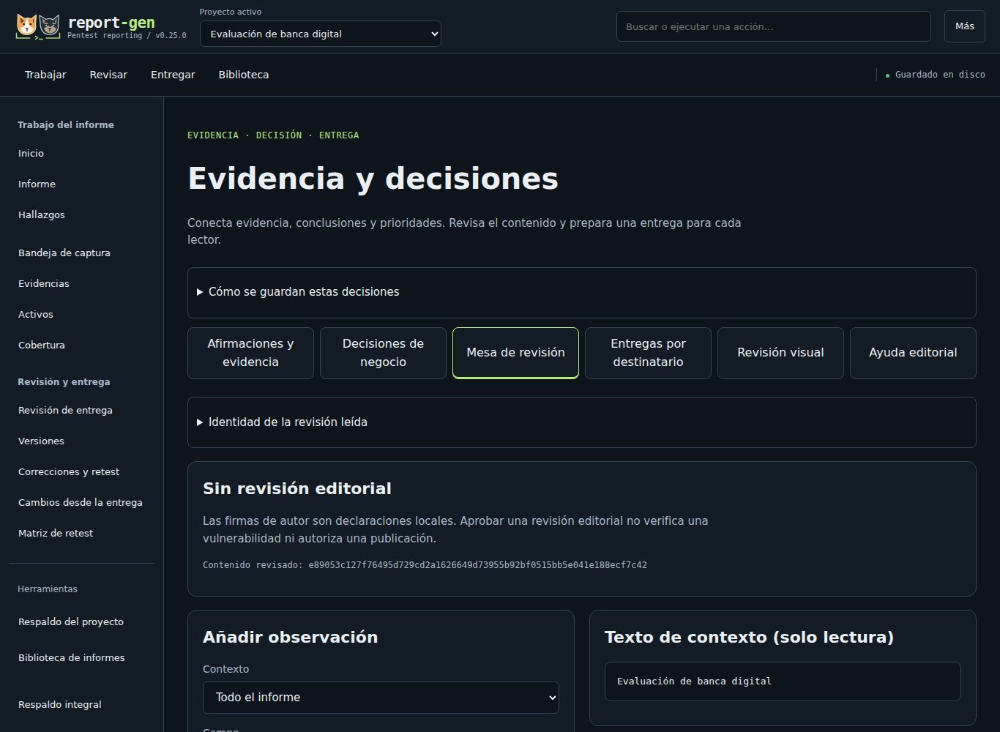
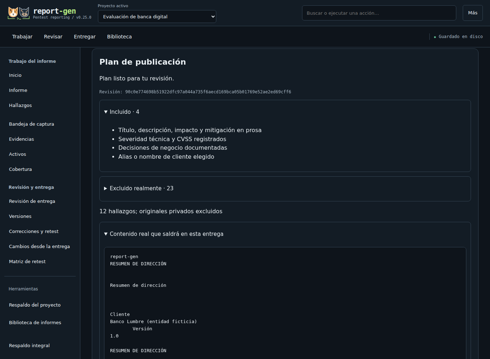

Del hallazgo a una entrega que puedes explicar y revisar.
Mi cuadernoFavoritos y lectura guardados solo en este navegador.Cuaderno opcional no disponible.
Demostración didáctica. Los paneles de texto representan tareas de report-gen 0.29.0; no son una aplicación remota. Las pantallas reales se identifican por su pie de captura y versión. Todos los datos de ejemplo son ficticios. La herramienta funciona localmente.
Edita una ficha y comprueba cómo se presenta
Ejercicio ficticio en este navegador. Edita los campos: las dos vistas HTML se actualizan mientras escribes. La vista técnica conserva la observación; la ejecutiva destaca la consecuencia y la decisión. No usa IA, no ejecuta pruebas y no genera un informe de report-gen.
El ejercicio no envía ni guarda tus cambios. Al recargar, vuelve el ejemplo ficticio.
La comparación inicial está disponible sin JavaScript. Para editarla, activa JavaScript.
Comparación de destinatarios
Lectura técnica
Acceso a documentos de otra cuenta
Portal de documentos · laboratorio local
Severidad ilustrativa
Alta
Observación técnica
En el guion, la cuenta A recibe un documento de la cuenta B al cambiar la referencia solicitada.
Acción propuesta
Validar en el servidor la identidad, el propietario y el permiso sobre cada documento. Repetir controles positivos y negativos.
Ejemplo sintético · sin prueba ni retest
Lectura ejecutiva
Acceso a documentos de otra cuenta
Portal de documentos · laboratorio local
Severidad ilustrativa
Alta
Consecuencia para el negocio
La separación entre cuentas podría fallar y exponer documentos privados de otro cliente ficticio.
Acción propuesta
Validar en el servidor la identidad, el propietario y el permiso sobre cada documento. Repetir controles positivos y negativos.
Ejemplo sintético · sin prueba ni retest
Elige una tarea. Puedes inspeccionar el objetivo, lo que revisaría y el resultado que entregaría sin descargar recursos adicionales.
En la app local, abre «Evidencia y decisiones» desde la barra lateral. En móvil, está dentro de «Más». Sus pestañas corresponden a estas tareas.
1 · Documentar evidencia

Captura real de report-gen 0.25.0: asociaciones y figura sintética de Banco Lumbre. Fuente ficticia recuperada, sin ejecutar un pentest ni agregar datos para la captura. Ampliar captura (abre otra pestaña).
Abre «Afirmaciones y evidencia» y selecciona el hallazgo.
Elige el tipo de afirmación, redacta qué demuestra y qué no demuestra, y vincula la evidencia concreta.
Pulsa «Guardar afirmación» y revisa su contexto y límites.
Ejemplo ficticio · F01
Una cuenta consulta el documento de otra
Qué demuestra
En el escenario sintético, la respuesta contiene un documento ajeno al cambiar su referencia.
Qué no demuestra
No acredita acceso a todos los documentos ni a una entidad real.
Contexto conservado
Activo, identidad, petición, respuesta y vínculo entre hallazgo y evidencia.
Qué revisaría antes de usar la captura
Que la identidad y el objeto sean distintos, que la comparación tenga una referencia legítima y que la captura conserve suficiente contexto. Censuraría datos sensibles sobre la imagen, verificaría el resultado y conservaría el original privado cuando proceda.
Una imagen ilustrativa no se convierte en prueba ejecutada por añadirla al informe.
2 · Revisar la entrega

Captura real de report-gen 0.25.0: mesa de revisión editorial de Banco Lumbre, todavía sin revisión registrada. Una revisión editorial no verifica una vulnerabilidad. Ampliar captura (abre otra pestaña).
Abre «Mesa de revisión» y selecciona contexto y campo.
Escribe la observación y su autor local; pulsa «Guardar observación».
Revisa el contenido y registra la revisión editorial. Resolver una observación no demuestra una remediación verificada.
Lista ilustrativa · no ejecutada desde esta página
Referencias, metadatos y coherencia de las evidencias.
Texto, imágenes y destinos del índice del PDF.
Tablas, títulos, capturas y paginación mediante revisión visual.
Avisos pendientes reconocidos y preservados en la entrega.
Qué significa una comprobación correcta
Comprueba propiedades del archivo producido; no vuelve a ejecutar un pentest ni verifica que una vulnerabilidad esté corregida. Los avisos necesitan una decisión del autor. Revisaría PDF y Word en el entorno del destinatario.
3 · Preparar la lectura ejecutiva

Captura real de report-gen 0.25.0: plan de un resumen de dirección de Banco Lumbre. Datos ficticios, sin evaluación de un cliente ni aprobación de su publicación. Ampliar captura (abre otra pestaña).
Abre «Entregas por destinatario» y elige el perfil y los hallazgos.
Pulsa «Comprobar qué se incluirá» y revisa inclusiones, exclusiones y contenido real del plan.
Selecciona formatos, reconoce los avisos que correspondan y usa «Generar y descargar ZIP». Revisa los archivos antes de compartirlos.
Banco Lumbre · SIMULACIÓN
Pagos sin aprobación independiente
Consecuencia del guion: una misma identidad prepara y aprueba un pago.
Decisión propuesta: separar funciones y validar la autorización en el servidor.
Verificación pendiente: probar casos positivos y negativos tras implementar el control. No hubo un pago real ni retest.
Cómo adaptar el contenido al destinatario
Dirección necesita alcance, consecuencia, prioridades, límites y decisiones. El equipo técnico necesita reproducción, evidencias y remediación. Los perfiles generan archivos independientes con contenido seleccionado y exclusiones reales. Para un extracto público, redactaría texto nuevo, usaría un alias y registraría los permisos de publicación. Revisaría siempre el plan y el archivo producido. Cambiar la vista o aplicar un filtro al HTML completo solo altera su presentación; no elimina datos de ese archivo.